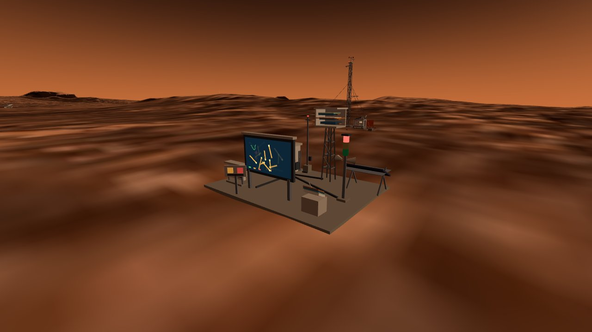
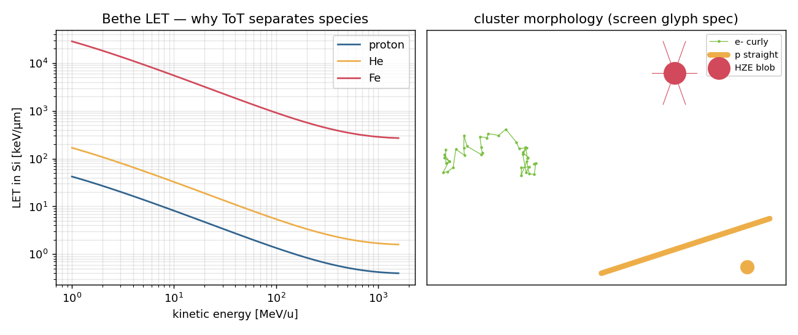
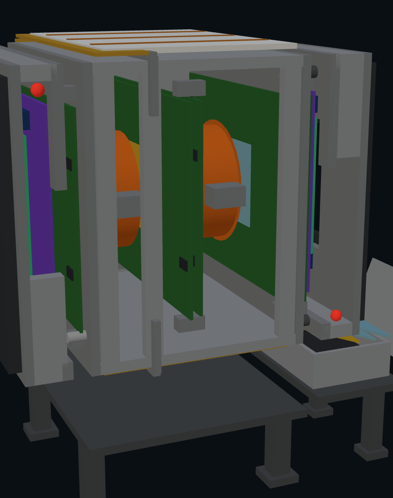
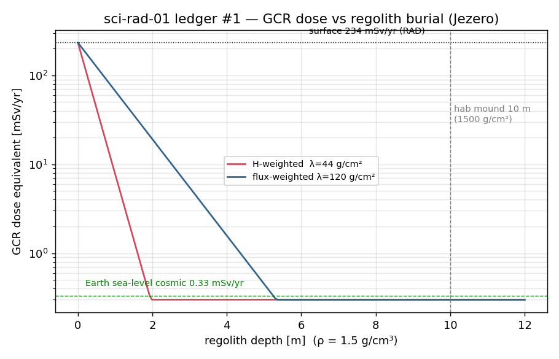

THE RADIATION NET
Three tiers, one storm — an orbit spectrometer, a surface particle camera, and underground silence

Surface tier: the Timepix4 particle-camera station beside the weather mast — live track display, SEP alarm tower, EVA dosimeter rack

Track morphology classifier: electrons curl, protons run straight, heavy ions burn short and bright

Orbit tier: MiniPAN structure — twin NdFeB magnet rings, nine strip layers (SiC-LGAD upgrade pair in violet), TOF stack

The dose-depth ledger: surface GCR to Earth-background under 30 m of rock — the reason the city lives downstairs

Neutron response window: converter-layer design for the albedo-neutron band
🛰 OrbitMiniPAN magnetic spectrometer, rebuilt from the real mechanical STEP (532 placements parsed) — momentum + charge sign, the only tier that can do spectroscopy
📐 SurfaceTimepix4 per-pixel ToA/ToT: species by track shape, dose equivalent live; storm dynamic-range budget spans quiet sol → large SEP
⚛ Underground4H-SiC sentinels — one TCAD campaign, two deployments: LGAD gain layers for MiniPAN, PiN posts for the fusion perimeter; room-temp, light-blind, rad-hard
📐 The storm testSame SEP event: orbit reads the spectrum, the surface rains tracks and goes red, the deep lab does not tick — the shielding ledger, measured live
📐 Fusion fencePerimeter counting rates anchored to the tokamak's 18 Geant4 production transports (14 MeV leakage through the breeding blanket)
In townRed alert grounds the helicopter and freezes EVA — the net shares its alarm bus with the weather mast next door